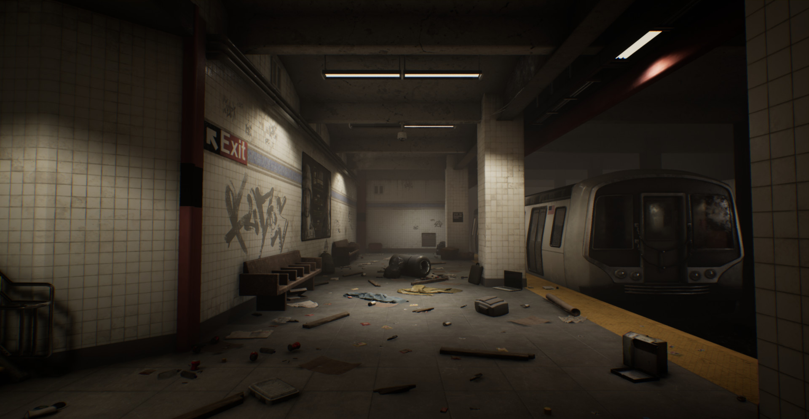
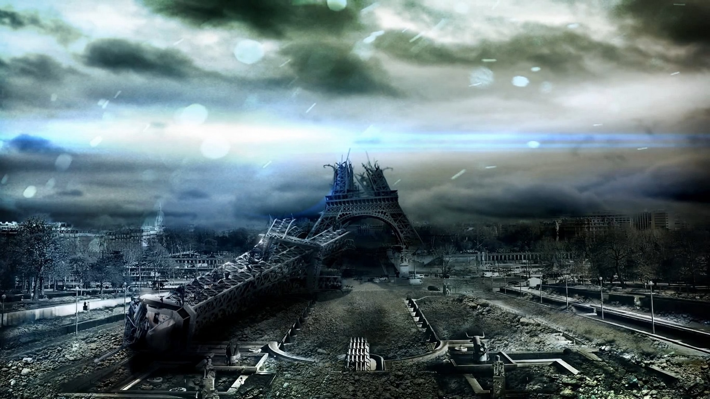

contexte
La guerre entre l'Ukraine et la Russie prend une ampleur internationale à tel point qu'une partie de la France est anéantie. Votre groupe se trouvait dans le métro alors qu'un missile de grande envergure envoyé par la Russie s'est écrasé à quelques kilomètres de Paris, Rasant la totalité de la ville et ses habitants

